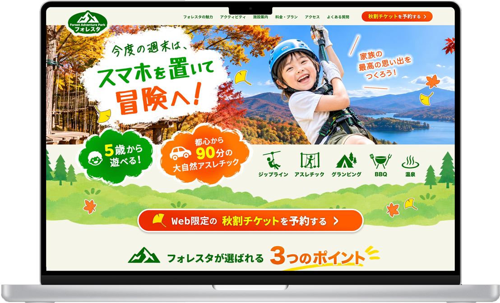
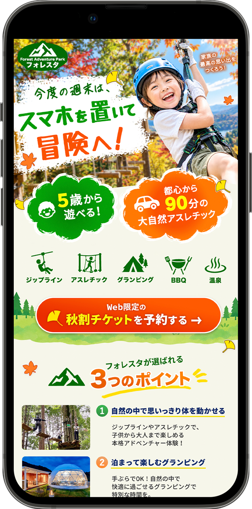

Overview課題とターゲット
週末の家族連れの予約数を増やすこと。ターゲットは、子どもを思い切り遊ばせたい一方で、遠出の疲れや準備の手間は避けたいと考えている子育て世代です。
ターゲット
30〜40代の既婚男女。小学生以下の子どもがいるファミリー。
抱えている悩み
- 週末くらい、子どもをスマホやゲームから離して体を動かさせたい
- 遠すぎる旅行は疲れるし、準備が大変なのは嫌
- 家族みんなの楽しい思い出になる場所に、手軽に行きたい
Conceptコンセプト
「遠出は大変。でも、子どもには思い切り遊ばせたい」というファミリーの本音を軸に、紅葉の森、子どもの笑顔、体を動かす爽快感をビジュアルの中心にしました。
遠くへの家族旅行ではなく、
都心から90分で行ける
週末の大冒険として見せる。
「うわ、楽しそう！」
「90分なら、今度の週末行こうよ！」
Bannerバナーデザイン
子どもが笑顔になり、親が「ここ楽しそう！行こうよ！」と会話したくなることを目指しました。ワクワク感を伝えるコピーから、行くための安心材料、予約ボタンへと視線が流れる構成です。
メインコピー「今度の週末は、スマホを置いて冒険へ！」
最も大きく、手書き風の文字で。「冒険へ！」をオレンジで強調し、子どもをスマホから離したい親の気持ちにそのまま応えます。
行くための安心材料「都心から90分」「5歳から遊べる！」
「遠すぎないか」「小さい子でも大丈夫か」という親の不安に答える2点を、車と子どものアイコン付きで並べました。
5つのアクティビティをアイコンで
ジップライン、アスレチック、グランピング、BBQ、温泉を並べ、1日中遊べることを一目で伝えます。
CTA「Web限定の秋割チケットを予約する」
オレンジの大きなボタンに、「秋割チケット」を黄色で目立たせました。「Web限定」でお得感と今すぐ予約する理由をつくっています。
#089A0A#F25A0A#FFE600#F6F5E8ファミリー層に親しみやすく、わくわくしてもらえるよう、アットホームで躍動感のあるトーンにしました。筆でかすれたような白い背景や、紅葉とイチョウの葉をちりばめて秋らしさと賑やかさを出し、写真にはジップラインを滑りながら満面の笑みを見せる子どもを選んでいます。
Landing PageLPファーストビュー
バナーをクリックした親御さんが、スマホで見た瞬間に「行ってみたい！」と思えることを目指しました。スマホの1画面に予約ボタンまでを収めるよう意識しています。


ジップラインの瞬間を大きく
子どもが笑顔でジップラインを滑る写真を大きく配置。背景の紅葉と湖で、秋の大自然も一目で伝わるようにしました。
安心材料と遊びを一覧に
「5歳から遊べる」「都心から90分」を吹き出しで目立たせ、その横（SPでは下）に5つのアクティビティをアイコンで並べています。
予約ボタンを1画面に、次をチラ見せ
SPでもスクロールせずに予約ボタンが見える位置に配置。下に「3つのポイント」の見出しをのぞかせ、続きを読みたくなるようにしました。